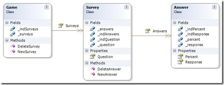
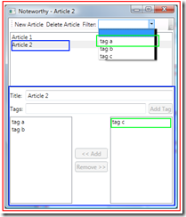

|
|
Archive for the ‘Update Controls’ Category
Thursday, December 2nd, 2010
Microsoft hosted a Silverlight Firestarter event. It was important for Microsoft to reset the Silverlight message after the Mary Jo Foley incident at PDC10. The most important piece in this strategy was Silverlight 5.
I was very excited today to see some of the new features coming in Silverlight 5 to support databinding. As Scott Guthrie says, this will bring Silverlight into even better parity with WPF. There are two features that I think are most important: implicit DataTemplates and markup extensions.
Implicit DataTemplates
I am a big believer in creating a DataTemplate based on the type, rather than explicitly setting a DataTemplate in XAML. This supports polymorphism to the view. If you have a heterogeneous list, this technique lets you express the view of each element declaratively. If you add a new type of item to the list, you just add a new DataTemplate to your resources.
Most importantly, this lets the View Model be in control. I’ve often said that the view model locator pattern is backwards. When the view locates the view model, navigation goes to the view first. This leads to some awkward code. But when we navigating to a view model, all of the navigation code is naturally in the right place. We can allow the resources to determine the correct DataTemplate. This technique is covered in Convention-based view model registration.
Markup extensions
The original Update Controls XAML interface was a binding extension. That is why it took so long to port Update Controls to Silverlight. The Update markup extension provided WPF data binding without INotifyPropertyChanged. It bound directly to your view model.
To support Blendability, and to enable the Silverlight port, I added ForView.Wrap() to the library. This method wraps your view model so that the built-in Binding markup extension can use it. The wrapper has many disadvantages:
- It hides data annotations like Required and Display.
- It adds a performance tax because it uses reflection and (in the Silverlight versions) DependencyProperties.
- It requires you to call ForView.Unwrap() whenever accessing objects in code behind.
- It interferes with implicit DataTemplates.
The benefits of Blendability and Silverlight support outweighed these disadvantages, so it was with great sadness that I changed my recommended approach from the Update markup extension to ForView.Wrap(). Silverlight 5, however, is going to give me the choice back. If I can find a way to change how Blend does databinding, I’ll have the best of both worlds.
What does this mean for Update Controls
There will be a new version of Update Controls as soon as I get my hands on the Silverlight 5 bits. It will reintroduce the Update markup extension to Silverlight. I expect this version to be closer to the WPF code base, which should make code maintenance easier.
This also means that more Update Controls demos are coming. The joy of knowing that improvements are coming was sullied every time a demo implemented INotifyPropertyChanged. That interface is a stick in the eye every time I see it. It especially hurts when I see John Papa list INPC as one of the benefits of RIA services. I want everyone who watched the Silverlight Firestarter to be able to compare those demos with ones that don’t have the code clutter and pain of this extraneous interface. Let it be known that INotifyPropertyChanged is Obsolete, now more than ever.
Posted in Silverlight, Update Controls | No Comments »
Friday, October 22nd, 2010
Whenever I demo Update Controls for WPF, Silverlight, or Windows Forms, I usually get the question “What about the web?” My answer has always been that Update Controls doesn’t work on the web because the user interface (in the browser) is far removed from the data model (on the server). Fortunately, Knockout.js solves that problem.
Steven Sanderson created this elegant JavaScript library that does automatic dependency tracking the same way that Update Controls does. He solves the far-removal problem by moving the data model into the browser. Write your web app using JSON services, and pull your data into the browser. Then use the Knockout templating engine to transform that data into the view. The view will be dependent upon the data, so it updates when it changes.
With XAML data binding, MVVM, Knockout, and Update Controls, the concept of automatic dependency tracking is starting to make its way into the mainstream. Before long, it will find its way into our programming languages.
Posted in Update Controls | No Comments »
Friday, July 16th, 2010
If you use Update Controls, please get the latest release. In addition to changing from LGPL to the MIT license, this one supports Visual Studio 2010 and Silverlight 4 better. It also includes a new ViewModelBase class for better control of your view models.
MIT License
My goal is to improve software quality. That is best accomplished by giving people the patterns and tools to develop the best software they can. That is why Update Controls is open source. If you can see how it works, you don’t have to fear it. The MIT license supports wide adoption by placing no additional burden on the user of the library.
Visual Studio 2010
While I’ve ported the project to VS2010, the library can still be used in VS2008. It still targets .NET 3.5, and will continue to do so for the foreseeable future. But Visual Studio has changed the way that it populates the Add Reference dialog. This new installer works better with that mechanism.
Silverlight 4
In addition to targeting Silverlight 3, the project also targets Silverlight 4. While Silverlight 4 can load assemblies built for 3, I found that that configuration was not as stable as a targeted Silverlight 4 build. Both assemblies are installed. Visual Studio chooses the correct assembly in the Add Reference dialog based on your project type.
ViewModelBase
Sometimes the wrapper gets in the way. If you are using paged collection views, data grids, or RIA services, you want the view to see the attributes on your view model. ForView.Wrap() obscures these attributes. In those situations, you can use ViewModelBase instead. Just call Get(() => ...) or GetCollection(() => ...) inside your property getters. You can put whatever logic you need to inside the lambda expression.
When Update Controls was originally created, I favored composition over inheritance. Since then, the MVVM pattern has become quite popular. Many of these new frameworks have a class called ViewModelBase that implements INotifyPropertyChanged. Since the community appears to accept giving up their base class for this purpose, I decided that Update Controls should offer that as an option. But ForView.Wrap() and the Update markup extension are still fully supported. The choice is yours.
Posted in Update Controls | No Comments »
Sunday, March 21st, 2010
I will be speaking at the Dallas XAML user’s group on May 4. I’ll guide the group through the creation of a simple MVVM application to demonstrate why you want to use the pattern. This is a hands-on format, so bring your laptop. We will be using Visual Studio 2008 and WPF, so no special downloads will be required.
In preparing for this presentation, I’ve researched much of the MVVM advice currently available. Here are just some of the sources that I’ve found:
In almost every example, the presenter copies data from their Model into the View Model. Some don’t even have a Model at all! I, on the other hand, create pass-through View Models. My View Models don’t store any data. So either I’m doing it wrong, or my idea of MVVM is different from everybody else’s. Before I present the pattern to a room full of people with laptops, I’d like to know which.
Disconnected View Model
The typical example of a View Model example keeps a copy of its data. The properties work against local fields.
public class PersonViewModel : INotifyPropertyChanged
{
public event PropertyChangedEventHandler PropertyChanged;
private string _firstName;
private string _lastName;
public string FirstName
{
get
{
return _firstName;
}
set
{
_firstName = value;
FirePropetyChanged("FirstName");
FirePropetyChanged("FullName");
}
}
public string LastName
{
get
{
return _lastName;
}
set
{
_lastName = value;
FirePropetyChanged("LastName");
FirePropetyChanged("FullName");
}
}
public string FullName
{
get
{
return string.Format("{1}, {0}", _firstName, _lastName);
}
}
private void FirePropetyChanged(string propertyName)
{
if (PropertyChanged != null)
PropertyChanged(this, new PropertyChangedEventArgs(propertyName));
}
}
Before you display the view, you have to copy the data into the view model. At some point later, you copy the data back out of the view model.
public class PersonViewModel
//...
public static PersonViewModel FromPerson(Person person)
{
return new PersonViewModel()
{
FirstName = person.FirstName,
LastName = person.LastName
};
}
public void ToPerson(Person person)
{
person.FirstName = _firstName;
person.LastName = _lastName;
}
}
Some of the experts just skip the model class altogether and go straight from their view model to the database or service.
Pass Through View Model
I prefer the pass through style. The view model stores no data.
public class PersonViewModel : INotifyPropertyChanged
{
public event PropertyChangedEventHandler PropertyChanged;
private Person _person;
public PersonViewModel(Person person)
{
_person = person;
}
public string FirstName
{
get
{
return _person.FirstName;
}
set
{
_person.FirstName = value;
FirePropetyChanged("FirstName");
FirePropetyChanged("FullName");
}
}
public string LastName
{
get
{
return _person.LastName;
}
set
{
_person.LastName = value;
FirePropetyChanged("LastName");
FirePropetyChanged("FullName");
}
}
public string FullName
{
get
{
return string.Format("{1}, {0}", _person.FirstName, _person.LastName);
}
}
private void FirePropetyChanged(string propertyName)
{
if (PropertyChanged!= null)
PropertyChanged(this, new PropertyChangedEventArgs(propertyName));
}
}
Instead of storing a copy of the Person data, this view model uses the storage that is in the actual Person model. There is no back-and-forth copying of data.
The advantages of pass through
I prefer the pass through style because it limits the number of moving parts in the application; in other words, it minimizes the “degrees of freedom”. Fewer moving parts means:
- Less code
- Fewer tests
- Fewer things that could break
- Simpler communication
If data exists in two places, then it will diverge. Data in one place will be more up-to-date than data in the other place. You have to write code to manage the divergence. That code needs to be tested. That code could break.
Many of the MVVM frameworks that the experts use have a mechanism for sending messages from one view model to another. This is necessary because each view model has its own copy of the data. But if each view model passes through to the same model object, then message passing is no longer necessary. The data model itself becomes the means of communication between view models.
The disadvantages of pass through
There is a trade-off between the disconnected and pass through styles. The pass through style does have some disadvantages:
- Harder to support Cancel
- Requires change notification from model
- Difficult to represent complex transformations
Some applications call for the modal dialog OK/Cancel metaphor. It is easier to implement this metaphor if you copy the data into a disconnected view model. If the user presses cancel, you just don’t copy the data back to the model.
While view models can use the data model to share data, they need to be notified of changes that other view models are making. That means that your view models not only implement INotifyPropertyChanged, they also subscribe to it. This can lead to a lot of bookkeeping code. Fortunately, there is a solution to this, but you have to use a third-party library.
Some transformations cannot be easily represented as a pass through. Maybe the objects in the data model need to be combined or regrouped in different ways. This regrouping cannot be easily done with pass through properties. A disconnected view model can make large scale transformations during the copying process.
None of the experts that I’ve studied make a distinction between disconnected view models and pass through view models. This is unfortunate, because the differences are significant. Where the advantages of a pass through view model outweigh the disadvantages, I find it to be an excellent choice. But before you can make that choice, you have to know that there is a choice to be made.
Posted in Update Controls, dof | 2 Comments »
Wednesday, January 27th, 2010
Correspondence is a library for creating collaborative smart client applications in .NET. When you express a model in Correspondence, it provides three things:
- Storage
- UI updates
- Synchronization
This open source library includes a demo application to illustrate its collaborative capabilities. Correspondence Reversi is a WPF rendition of a popular two player game. Download the client to play against a friend, or to randomly join in a game with a stranger. Download the source code to learn how Correspondence makes collaboration easy.
Storage
Applications typically store their data in a relational database. But they act upon that data by loading objects into memory. To bride the gap, application designers can choose from several object-relational mappers (ORMs).
The problem with the ORM approach is that it requires the application designer to express their model three times:
- Database schema
- Objects
- Mapping configuration
Keeping these three in synch becomes a maintenance task each time the model changes. And deploying a new version requires that the data be migrated to the new schema.
Correspondence is not an ORM. The application model is not reflected in a relational database schema. When the model changes, only the objects are changed. The schema remains consistent. This allows for new versions to be deployed without changing the database or migrating data. And it eliminates the need for mapping configuration, as the library stores all models the same way.
UI updates
Correspondence is built on top of Update Controls, a library for keeping UI controls up-to-date. While most UI update libraries require you to manage your own dependencies, Update Controls discovers them for you and manages them on your behalf. The only thing that Update Controls requires is that your model alert it when a property is accessed or modified.
Correspondence takes on the responsibility of notifying Update Controls. A Correspondence model can be bound to a Winforms or WPF user interface – even through an intermediate View Model – to provide automatic dependency discovery and change notification. A Correspondence application developer will never see INotifyPropertyChanged or ObservableCollection.
Synchronization
By far the most compelling feature of Correspondence is that it automatically synchronizes a data model among clients. Two or more people collaborating on the same data on different machines will automatically see each other’s changes. The automatic UI updates provided by Update Controls ensure that changes made on one machine automatically appear on the screen of another.
Most smart client applications switch from off-line mode to on-line mode based on the availability of the network. While on-line, smart clients communicate changes that the user makes with a server. It runs queries on the server to bring back information that the user wants to see. While off-line, they switch into a mode where data storage and queries are performed locally. Typically, smart client synchronization occurs during the switch between modes.
Correspondence works differently. It offers a consistent programming model whether the network is available or not. Objects created in Correspondence are stored locally, regardless of network availability. A background thread constantly synchronizes the local storage with a server when available, and silently waits when it is not. By eliminating the switch between modes, Correspondence simplifies the task of smart-client development, and improves the end-user experience.
Correspondence Reversi synchronizes with a cloud service running in Windows Azure. This service collects data from each client, and redistributes that data to other clients who need it. Two people playing a game together will see each other’s moves. But they will not see any of the traffic from other games. This is not a special feature of the Reversi game model. This is a feature of Correspondence. A different model will be synchronized just as intelligently, and will work with the same synchronization service. There is nothing application-specific about the cloud service.
Please download the client and play against your friends. Then explore the source code and see what you can do with Correspondence.
Posted in Synchronization, Update Controls | No Comments »
Monday, November 23rd, 2009
I was saddened when I was unable to attend PDC this year. One project is winding down, we're staffing up for the next, and I cannot be spared at this particular time. I was not present when Scott Hanselman dragged and dropped his way through a data binding demo. Nevertheless, I was groaning from afar.
I did, however, have the chance to participate in the Not@PDC conference. It was quickly organized via Twitter and blogs to be an online get together for folks who were not lucky enough to be in LA. (Lucky to be in LA? Did I really say that?) It turned out to be a wonderful substitute. OK, not really a substitute; more like consolation.
I presented Data Binding Without INotifyPropertyChanged, a 70-minute demo of Update Controls in WPF, Winforms, and Silverlight. In the video, I show you the most awesome application ever: Microsoft Excel. Excel is awesome because you can use the MVVM pattern. It's true.
As you watch, please forgive the poor video quality and even poorer jokes. I'll be polishing the demo and taking it on the road. My first stop will hopefully be the North Dallas .NET Users' Group. I'll keep you posted.
Posted in Update Controls | No Comments »
Saturday, October 10th, 2009
I now have three sites for topic-specific content.
I have seeded these sites with articles from Adventures in Software. But from now on, articles specific to those topics will go on those sites. Please subscribe to those RSS feeds as well as this one.
Posted in Historic Modeling, Update Controls, qed | No Comments »
Friday, October 2nd, 2009
A WPF TreeView control can display data in any tree structure. There are essentially two kinds of tree structures: recursive and non-recursive. Non-recursive trees are simpler.
Items in a recursive tree can have children of the same type. Items in a non-recursive tree cannot. A non-recursive tree has a fixed depth, and every item on the same depth is the same type as its siblings. This makes it particularly easy to model in WPF.
Pictured here is a non-recursive tree structure for a survey game. A Game has Surveys, which in turn have Answers. It's a very simple tree structure with no recursion. The depth of this tree from the Game to the Answers will always be 3.
Binding the TreeView
Let's start with a TreeView control that displays the surveys. We'll bind the collection to the ItemsSource of the TreeView.
<TreeView ItemsSource="{Binding Surveys}">
</TreeView>
The TreeView control creates a TreeViewItem for each element in the collection. We need to tell the container how to populate those TreeViewItems. We do this with a DataTemplate.
A DataTemplate defines the contents of an item in a container control. DataTemplates are used for things like list boxes, menus, and tree controls. A DataTemplate does not define the item itself -- the container determines that. ListBox controls have ListBoxItems. TreeView controls have TreeViewItems. The DataTemplate just defines what goes into that item.
We want each TreeViewItem to contain a TextBlock bound to the survey question. So we set the ItemTemplate property to an instance of the DataTemplate class. This DataTemplate contains a TextBox with the right binding.
<TreeView ItemsSource="{Binding Surveys}">
<TreeView.ItemTemplate>
<DataTemplate>
<TextBlock Text="{Binding Question}"/>
</DataTemplate>
</TreeView.ItemTemplate>
</TreeView>
We want each TreeViewItem to have child items. The child items are not contained within the parent item. They are just a property of the parent item. We can't use a DataTemplate to set properties. So we switch to a special DataTemplate: HierarchicalDataTemplate.
HierarchicalDataTemplate
A HierarchicalDataTemplate is a DataTemplate with an additional property: ItemsSource. This property is bound to a child collection. The template sets this property on the TreeViewItem itself.
<TreeView ItemsSource="{Binding Surveys}">
<TreeView.ItemTemplate>
<HierarchicalDataTemplate ItemsSource="{Binding Answers}">
<TextBlock Text="{Binding Question}"/>
</HierarchicalDataTemplate>
</TreeView.ItemTemplate>
</TreeView>
This template will set the ItemsSource of each Survey TreeViewItem to the bound collection of Answers. But, as before, we need to tell the control what to put into those TreeViewItems. We do this by setting the ItemTemplate property of the HierarchicalDataTemplate.
<TreeView ItemsSource="{Binding Surveys}">
<TreeView.ItemTemplate>
<HierarchicalDataTemplate ItemsSource="{Binding Answers}">
<TextBlock Text="{Binding Question}"/>
<HierarchicalDataTemplate.ItemTemplate>
<DataTemplate>
<TextBlock Text="{Binding Response}"/>
</DataTemplate>
</HierarchicalDataTemplate.ItemTemplate>
</HierarchicalDataTemplate>
</TreeView.ItemTemplate>
</TreeView>
Because the Answer TreeViewItem does not need to have children, there is no need to use a HierarchicalDataTemplate at this level.
A non-recursive tree structure is easy to model. Since an item does not have children of its own type, there are no self-referential templates. When the tree structure can be recursive, however, things are a bit tricker. That's coming up.
Posted in Update Controls | No Comments »
Thursday, September 17th, 2009
Ben Rady is the author of Infinitest, a continuous testing tool. This is an Eclipse or IntelliJ plug-in for Java that runs unit tests as you edit code. The key differentiator of Infinitest over other continuous testing plug-ins is that it runs only the unit tests that need to be run.
Ben describes how he accomplishes this feat. He uses static analysis of both the test and the code under test to determine whether tests need to run. Unfortunately, he's doing more work than he needs to. Continuous testing does not require static analysis.
Update Controls
I moderate an open source project called Update Controls for .NET. This project does data binding for WPF, Winforms, and Silverlight. It has absolutely nothing to do with a continuous testing plug-in for Java.
Or does it?
Update Controls automatically discovers the data that your properties depend upon. When that data changes, those properties are updated. You might think that it's doing some sort of static analysis to discover dependencies, but it's much simpler than that.
Say you have a dependent property "A". As the property getter for "A" is executing, Update Controls is watching. When another property called "B" is referenced, Update Controls says "Aha! A depends upon B." It's that simple.
Why does this work?
Most code is deterministic. If you call it providing the same inputs, it will produce the same outputs. Furthermore, it will do so in exactly the same way. So execute some code and it see what set of properties it reads. Execute it again, and it will still read the same set of properties.
Now, change a property not in the set that was read. Does the behavior of the code change?
No! The code only observed one set of properties. It doesn't care what happens to any other properties. It will still read that same set, and it will still produce the same results.
OK, this time change a property that is in the set. Does the behavior of the code change?
You bet it does. In fact, it may change drastically. It may even read an entirely different set of properties next time. So all bets are off. Once you change a property upon which it depends, you have to dump the entire set and run the code again. Then you can gather up a brand new set.
Back to Infinitest
So, Ben, my advice to you. Drop the static analysis. Instead pick up a code coverage tool. Look at all of the lines of code covered by each test. If any of those lines changes, you have to rerun the test. If not, you don't. Simple as that.
Posted in Update Controls | 1 Comment »
Sunday, August 9th, 2009
Download the source code and follow along.
The biggest challenge implementing the MVVM pattern is the View Model responding to changes in the Data Model. Usually, the View Model needs to subscribe to the PropertyChanged events fired by the Data Model, update its internal state, and then fire its own PropertyChanged events for the View. That's the hard way.
The easy way is to use Update Controls. With Update Controls, you just decorate the Data Model and wrap the View Model. The library takes care of everything in between.
Decorate a Linq to SQL data model
You decorate the data model by adding Independent sentries to every property. Whenever the property is accessed, call OnGet(). Whenever it is modified, call OnSet(). To decorate a Linq to SQL data model, we just need to inject these calls into the generated code. Unfortunately, the Linq to SQL code generator does not give you a way to easily tweak its output.
Damien Guard has solved that problem. His open source project LINQ to SQL templates for T4 is incredibly easy to set up and start using. It drops straight into Visual Studio and replaces the build-in code generator with one that you control. With just a few edits to his provided T4 template, I replaced INotifyPropertyChanged with Independent sentries.
I added a sentry for each single-valued property, and called OnGet() inside of the getter and OnSet() in the setter. I also added a sentry for each collection. They require OnGet() in the getter, and OnSet() when something is added or removed. Finally, I added a sentry per table, to take care of the top-level queries. For these, I call OnSet() on any insert, update, and delete. The final T4 template is in the example source code.
Wrap the view model for WPF
Wrapping the view model for the view is a one-liner.
public Window1()
{
InitializeComponent();
// Create a data model and a navigation model.
_blog = new Blog();
BlogNavigationModel navigationModel = new BlogNavigationModel();
// Put them both in a view model, then wrap it for the view.
this.DataContext = ForView.Wrap(new BlogViewModel(_blog, navigationModel));
}
We create a view model based on the decorated data model and a similarly decorated navigation model (more on that later). Then we let Update Controls wrap it up before we give it to the view.
View model per scope
The example application -- Noteworthy -- is a blog editor. Different parts of the view focus on different granularities of data. The main view (shown in red) focuses on the blog as a whole. The article list items and detail pane (shown in blue) focus on a single article. And the tag list items (shown in green) focus on a single tag.
We define one view model class for each of these three scopes. Each one takes constructor parameters to put itself in context. So the BlogViewModel takes a Blog, the ArticleViewModel takes a Blog and an Article, and the TagViewModel takes a Blog and a Tag.
The DataContext property of a WPF control determines where it begins for data binding. If you don't set it, the control inherits it from its parent. If the control is an item in a list, then it is automatically set to an element of the ItemsSource. Finally, you can data bind to a property of its parent scope. Noteworthy uses all three techniques.
Property per control attribute
WPF data binding connects control attributes to object properties. So within each view model, we define a property for each attribute of a control. The view model exists to serve of the view, so this one-to-one mapping is to be expected. The view model is an isolation layer designed to keep these view-specific concerns out of your data model.
Navigation model per user context
The user of your application has a conceptual model of how controls should work together. Noteworthy is a single window program, so they expect all of the controls on that window to interact appropriately. If it had multiple child windows all within a parent, they would expect each window to be its own context, but participate within the context of the main window. And if it were a composite application, they would expect all of the components to work together.
Where the user draws their conceptual boundary, we create a navigation model. A navigation model records the user's point-of-view as they navigate through the application. It keeps track of their selection and temporary input.
All of the state in the navigation model is transient. Nothing is written to the database. Persistent state belongs in the data model. This keeps the view model completely stateless. The view model has only behavior, which depends upon the data model and the navigation model.
Because the navigation model is transient, we just write fields, select them, and hit Ctrl+D, G to generate the properties. For example, here's the property that records the selected article. The part that I wrote by hand is highlighted:
public class BlogNavigationModel
{
private Article _selectedArticle;
#region Independent properties
// Generated by Update Controls --------------------------------
private Independent _indSelectedArticle = new Independent();
/// <summary>
/// The article for which to display details.
/// </summary>
public Article SelectedArticle
{
get { _indSelectedArticle.OnGet(); return _selectedArticle; }
set { _indSelectedArticle.OnSet(); _selectedArticle = value; }
}
// End generated code --------------------------------
#endregion
}
The properties of the navigation model are always data model types, never view model types. The view model depends upon the navigation model, not vice-versa.
Explore on your own
That's just enough to get you started. There are many interesting patterns that came together in the making of Noteworthy. Here are some that you might want to examine on your own:
- The BlogViewModel.Articles property is filtered by the selected tag.
- The article detail pane is a Grid within a Grid. The outer grid binds IsEnabled, while the inner grid binds DataContext.
- The TagListBoxStyle resource binds the ListBoxItem.IsSelected attribute to the TagViewModel.TagIsSelected property to support multiple selection.
- The Blog data model class uses a Dependent sentry to cache Tags.
- Every view model setter and command that affects the data model calls SubmitChanges.
- The ArticleViewModel.AvailableTags property uses .Except() to get all tags not assigned to the article.
- The BlogViewModel.SelectedArticle property wraps the data object from the navigation model in a view model, and then unwraps it on the way back.
- The first tag in BlogViewModel.Filters is actually not a tag at all. It is a null to represent the lack of a filter.
Expect future posts to return to this example and explore these points in more detail.
Posted in Patterns, Update Controls | 1 Comment »
|

{kind=link}
{kind=link}